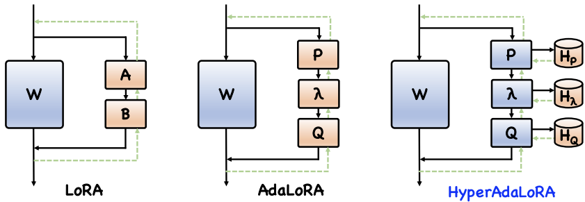
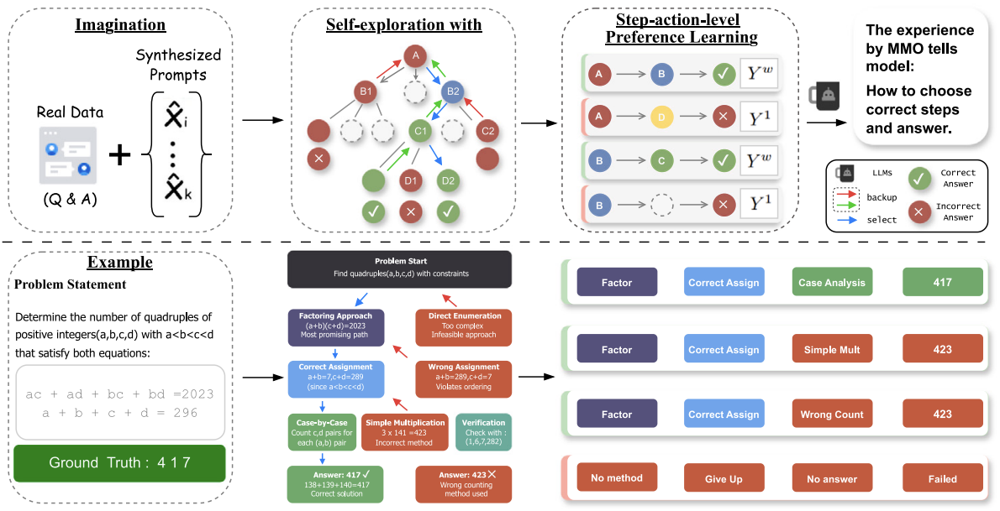
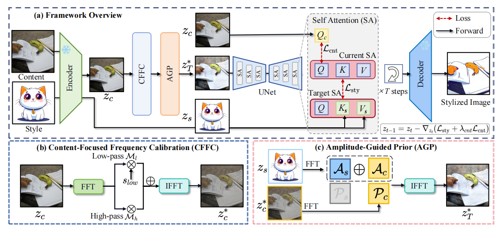
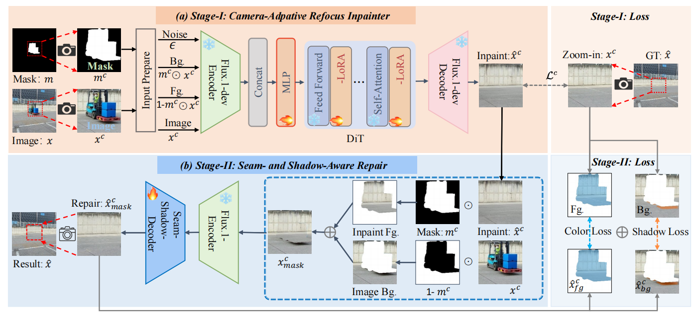
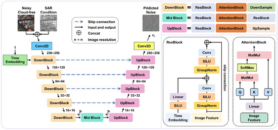
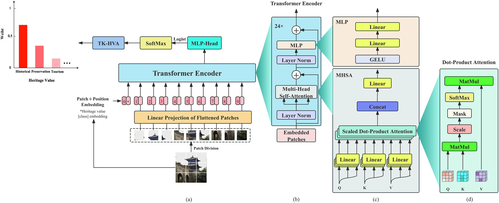
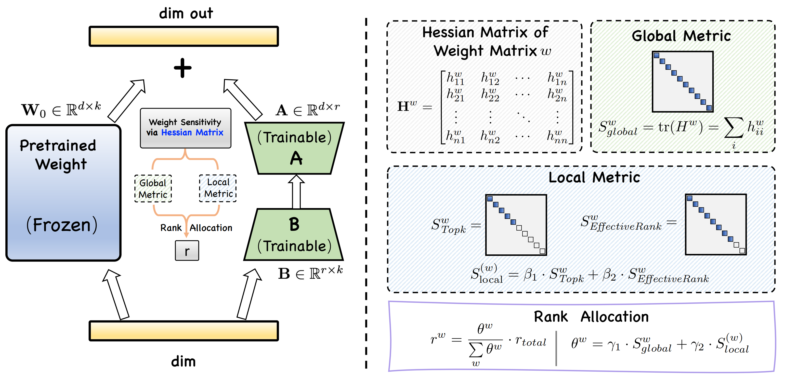
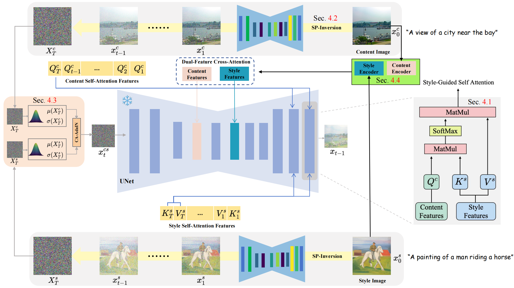
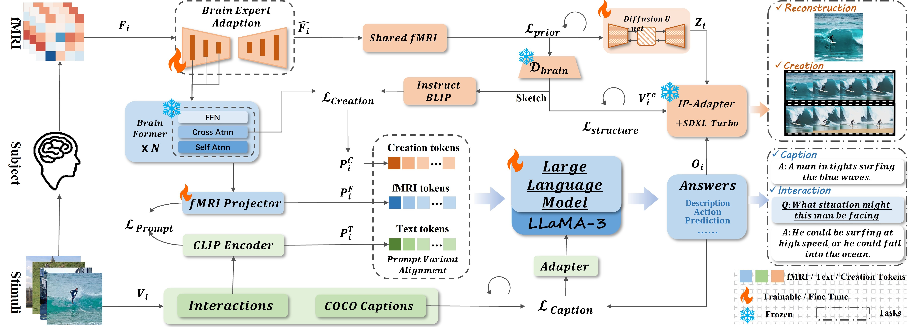

I am currently a Ph.D. student at Northwestern Polytechnical University, supervised by Prof. Ying Li. Previously, I received my Master’s degree from Northwestern Polytechnical University and my Bachelor’s degree in Software Engineering from Xi'an University of Science and Technology in 2023. I also studied as an exchange student in Computer Science at Khalifa University, Abu Dhabi, UAE, under the supervision of Prof. Naoufel Werghi. My current research interests include computer vision, generative models, diffusion models, remote sensing image processing, vision-language models, and efficient adaptation of large models.
News
- [2026.07] Our work "HyperAdaLoRA: Accelerating LoRA Rank Allocation During Training via Hypernetworks Without Sacrificing Performance" was accepted by Findings of ACL 2026. 🎉
- [2026.07] Our work "PathSymphony: Harmonizing Symbolic Planning and Large Language Models for Curriculum-Guided Mathematical Reasoning" was published in Knowledge-Based Systems. 🎉
- [2026.05] Our work "TransferAnything: Arbitrary Style Transfer via Frequency-Aware Latent Optimization in Diffusion Models" was published. 🎉
- [2026.04] Our work "RefocusEraser: Refocusing for Small Object Removal with Robust Context-Shadow Repair" was accepted by ICLR 2026. 🎉
- [2025.11] Our work "SAR-Conditioned Consistency Model for Effective Cloud Removal in Remote Sensing Images" was published in Remote Sensing. 🎉
- [2025.11] Our work "ViT-HVE: A Vision Transformer-Based Framework for Recognition and Weighted Evaluation of Cultural Heritage Values" was published in npj Heritage Science. 🎉
- [2025.08] One paper was accepted by EMNLP 2025. 🎉
- [2025.06] One paper was accepted by ICCV 2025. 🎉
Publications

HyperAdaLoRA: Accelerating LoRA Rank Allocation During Training via Hypernetworks Without Sacrificing Performance
Hao Zhang, Zhenjia Li, Yifan Gao, Xi Xiao, Heng Zhang, Shuyang Zhang, Bo Huang, Yuhang Wu, Tianyang Wang, Hao Xu
Findings of the Association for Computational Linguistics (ACL 2026)
[Paper]

PathSymphony: Harmonizing Symbolic Planning and Large Language Models for Curriculum-Guided Mathematical Reasoning
Mingqiao Mo, Hao Zhang, Yunlong Tan, Bo Huang, Chengcheng Li
Knowledge-Based Systems, 2026
[Paper]

TransferAnything: Arbitrary Style Transfer via Frequency-Aware Latent Optimization in Diffusion Models
Bo Huang, Yunpeng Bai, Jiaman Ma, Qingping Zheng, Hongxin Wang, Wenlun Xu, Qizhuo Han, Ying Li
IEEE International Conference on Acoustics, Speech and Signal Processing (ICASSP 2026)
[Paper]

RefocusEraser: Refocusing for Small Object Removal with Robust Context-Shadow Repair
Qingping Zheng, Bo Huang, Yang Liu, Haoyu Zhao, Ling Zheng, Zengmao Wang, Ying Li, Jiankang Deng
International Conference on Learning Representations (ICLR 2026)
[Paper]

SAR-Conditioned Consistency Model for Effective Cloud Removal in Remote Sensing Images
Qizhuo Han, Bo Huang, Ying Li
Remote Sensing 17(22):3721, 2025
[Paper]

ViT-HVE: A Vision Transformer-Based Framework for Recognition and Weighted Evaluation of Cultural Heritage Values
Wenlun Xu, Bo Huang, Ying Tang, Chengyong Shi, Yifei Wang, Shuya Kong, Pengyue Yan
npj Heritage Science, 2025
[Paper]

Sensitivity-LoRA : Low-Load Sensitivity-Based Fine-Tuning for Large Language Models
Hao Zhang*, Bo Huang*, Zhenjia Li, Xi Xiao, Hui Yi Leong, Zumeng Zhang, Xinwei Long, Tianyang Wang, Hao Xu（*Co-first author）
Empirical Methods in Natural Language Processing （EMNLP 2025）
[Paper]


Beyond Brain Decoding: Visual-Semantic Reconstructions to Mental Creation Extension Based on fMRI
Haodong Jing, Dongyao Jiang, Yongqiang Ma, Haibo Hua, Bo Huang, Nanning Zheng
International Conference on Computer Vision 2025 （ICCV 2025）
[Paper]
Academic Services
- [2025.08] Served as Program Committee for AAAI 2026.📑